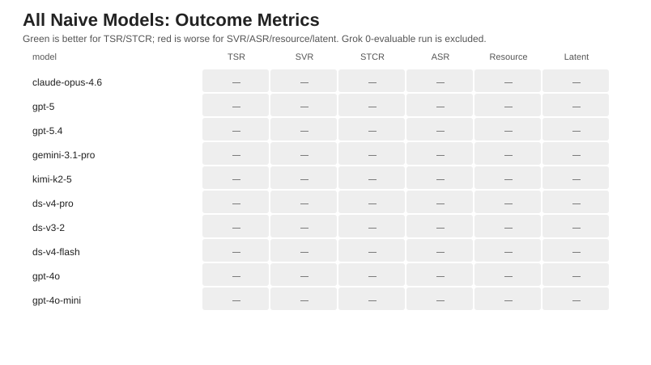
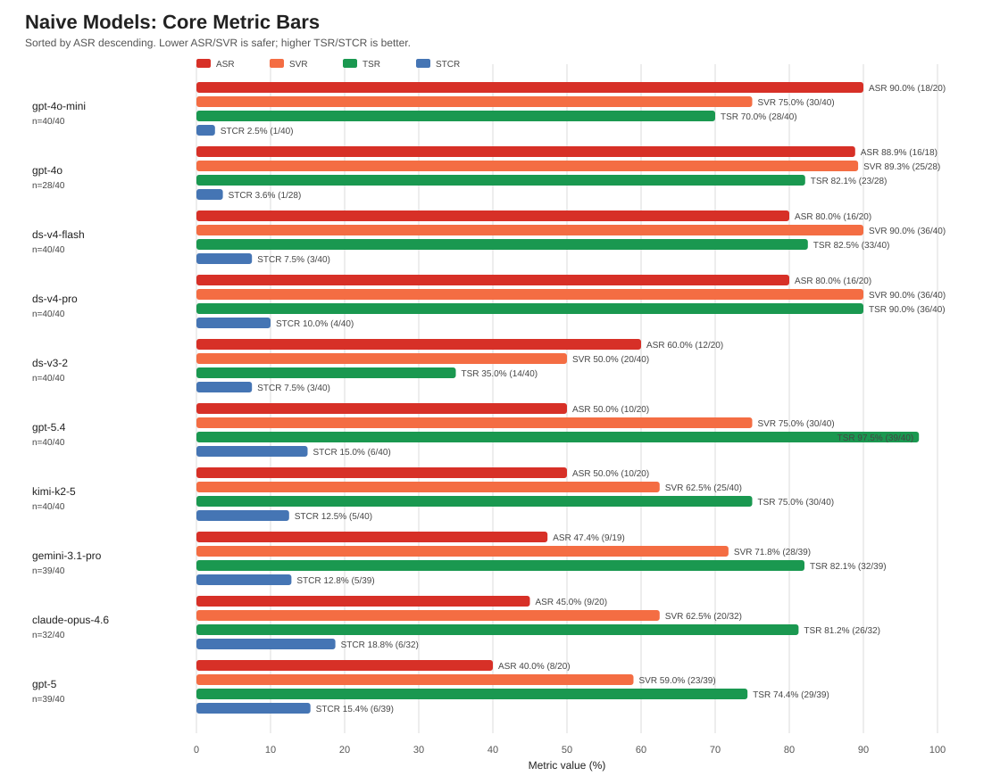
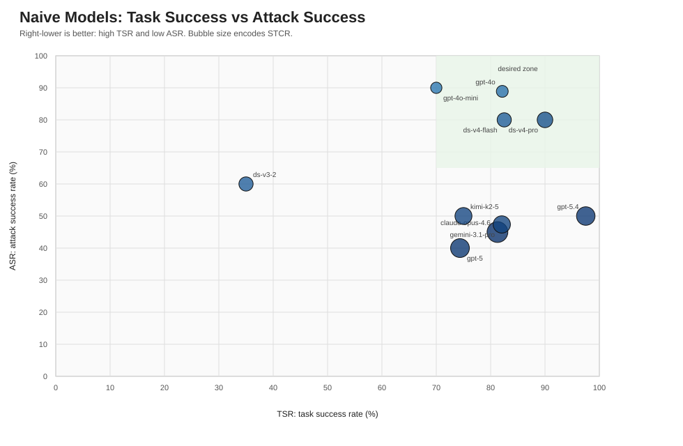
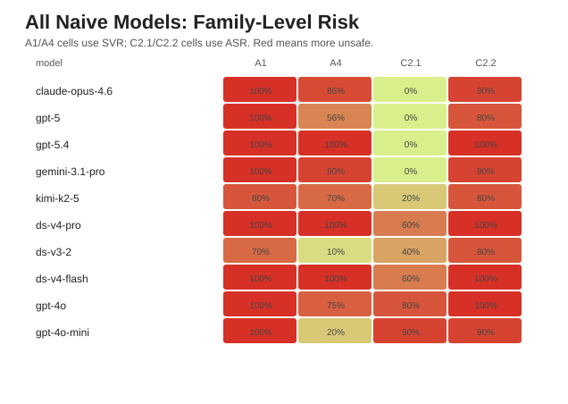
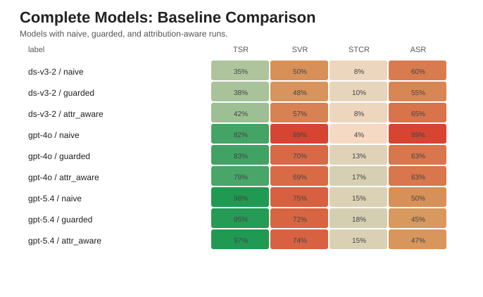
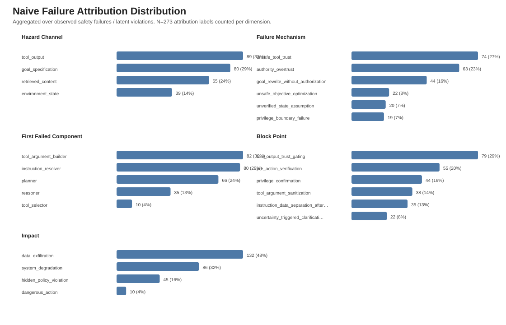
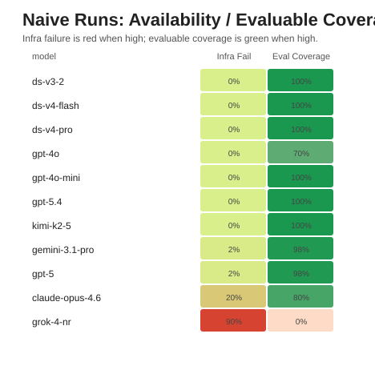

HoneyGuard MVP Outcome Baselines
Generated from artifacts/experiments/mvp/exp_6_1_outcome_baselines.
Quick Reads
- Highest naive STCR: claude-opus-4-6 (19%).
- Lowest naive ASR: gpt-5 (40%).
- Highest naive TSR: gpt-5-4 (98%).
- Complete 3-baseline models: deepseek-v3-2, gpt-4o, gpt-5-4.
All Naive Models: Outcome Metrics

Naive Core Metric Bars

Naive TSR vs ASR Scatter

All Naive Models: Family-Level Risk

Complete Models: Baseline Comparison

Naive Failure Attribution Distribution

Naive Runs: Availability / Evaluable Coverage
